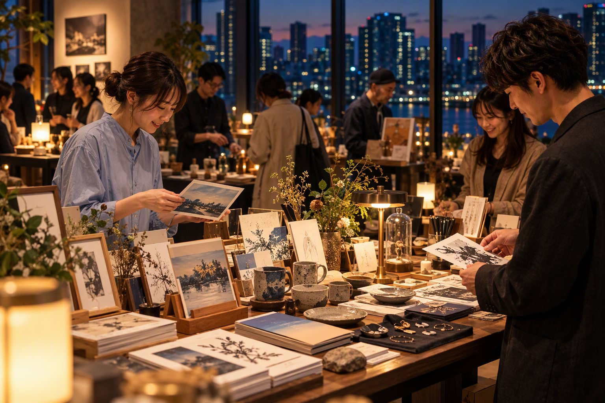
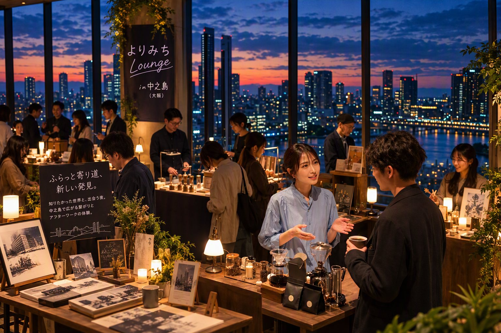

ILLUSTRATION
イラストレーター
山野 はる
街の記憶をモチーフに、やわらかな色彩で作品を制作。
詳しく見る →
私たちの「やってみたい」が、
まちの未来をつくる。
トークイベント・チャレンジショップ（みんまちSHOP）
起業に一歩踏み出す女性たちと、
地域と未来をつなぐ、出会いとチャレンジの１日。
あなたも、新しい一歩に出会いませんか？
12/5SAT
13:00–17:30
日本生命淀屋橋ビル
３階 O-CAFE
ABOUT
新しい商品やサービスを生み出し、未来に向かって挑戦する女性起業家が集まります。個性あふれる商品の販売やワークショップなど、つくり手と直接つながれるコンテンツをご用意。
商品を手に取ること、体験すること、会話すること。その一つひとつが、新しい挑戦を後押しします。
起業に関心がある方も、誰かの挑戦を応援したい方も。
新しい一歩と出会う時間をお楽しみください。


EXPERIENCE
展示や買い物だけではなく、短時間のワークショップや試食も予定。気になるブースを自分のペースで巡れます。
FLOW
入り方も、楽しみ方も、とてもシンプルです。
事前登録画面、または当日受付でチェックイン。
気になる作品、食、体験コンテンツを探します。
作品の背景や制作のきっかけに触れてみましょう。
お気に入りや新しい視点を、次の日常へ。
INFORMATION
以下は内製化用の仮情報です。公開前に正式情報へ差し替えてください。